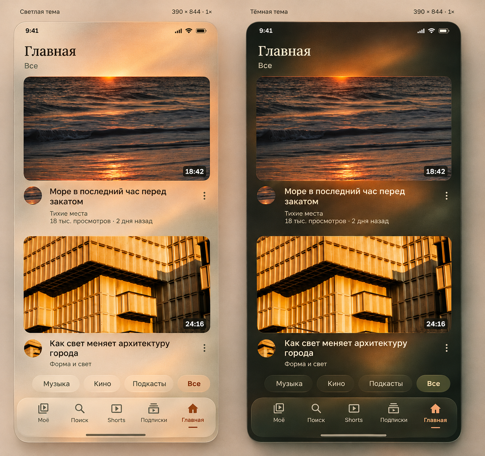
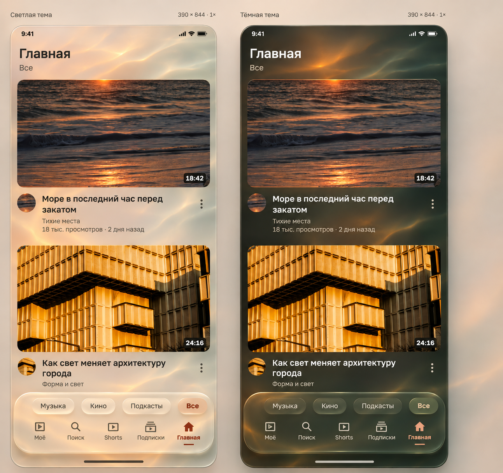
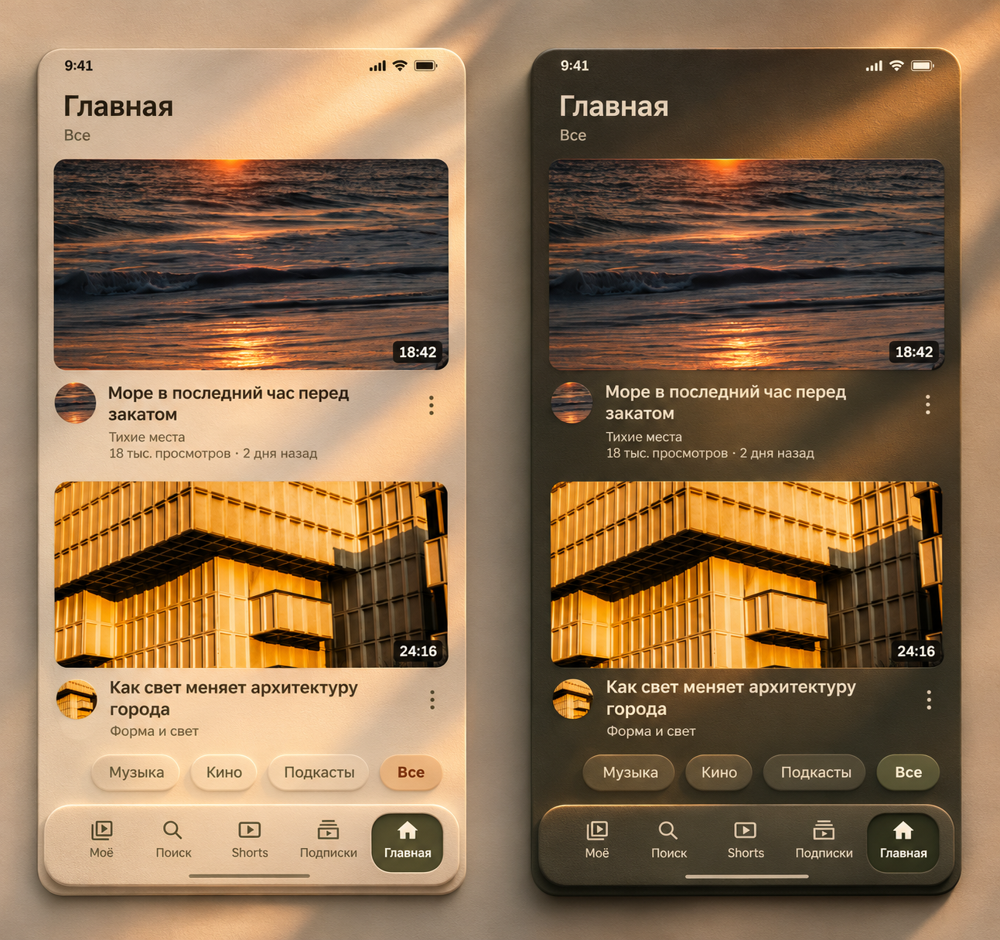

ErgoTube — свет и материал
Три статичных визуальных эскиза. В каждом — светлая и тёмная тема.
Засвеченная плёнка
Зернистый воздух, мягкие засветки и тёплый свет, выходящий за границы кадра.

Жидкий опал
Водяной свет в фоне, толщина стекла и док, который ощутимо отделяется от поверхности.

Солнечная керамика
Плотная матовая поверхность, скользящий солнечный свет и мягкие объёмные тени.
